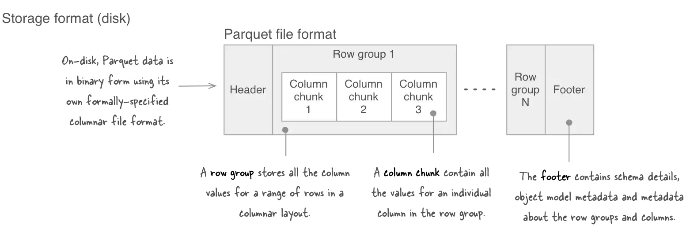

This documents all the tips, pitfalls I experienced along the way. Keep updating.
- File Name Pattern Substitution
-
ToDate(milliseconds)gives wrong date - DateTime SimpleDateFormat
- Parameter substitution Shell Runner subtle bug
-
Becareful of
DateTimedata type in pig -
More pitfalls for
DateTimedata type - Setting of memory
-
Pig Unit Test
override()method - Error message for wrong reference operator
- Pig Java UDF Unit Test
-
Duplicates and
nullbehavior forcogroup + flattenandjoin - specify function output data type
-
using
u0001as the delimiter - Error with SUBSTRING and SIZE function
- oneline to order two fields
- sort with duplicates
- input and output are reserved keyword in pig
- Mystery ERROR 2999
- Cumsum
- A pretty good graph cluster to pair Pig example code
- A pretty good Score bucketize and cumsum precision Pig example code
- Parameter Substitution in Pig
- SUBSTRING function
- Nested FOREACH
- Function are allowed inside FOREACH
- Use Star Expression and Project-Range Expression
- Strange bug ERROR 2116 related with compression
- Strange Bug with Split of two logic expressions
-
Use
AvroStorage()inside pig - Load Parquet data to pig
- A side-by-side datatype comparison among avro, parquet, and pig
- More about the parquet
- From one relation, put two fields into one bag by FLATTEN
-
Learning from piggybank
HashFNV
File Name Pattern Substitution
Pig is using hadoop file glob utilities to process the file name pattern. It is NOT using shell's glob. Hadoop's glob are documented here. Specially, it does not support .. operator for a range.
ToDate(milliseconds) gives wrong date
Bug looks like always return date of some time at 1970-01-17. This is because the input is 10 digits in seconds, and input should be in milliseconds. Need \( \times 1000\) on the input to get the correct DateTime.
DateTime SimpleDateFormat
Pig's DateTime type conforms to the following format:
SimpleDateFormat dateFormat =
new SimpleDateFormat("yyyy-MM-dd'T'HH:mm:ss.SSSXXX");
The string format is: 2001-07-04T12:08:56.235-07:00
Java official example table
[YGMARK] -07:00 timezone format is only supported after JDK 7.
Parameter substitution Shell Runner subtle bug
I like to define _ as the output file separator. I usually have parameter SEP= '_' in my pig script and shell runner. However, if this parameter is defined inside shell runner, it has to be escaped, like: SEP='\_'. Otherwise, this mislead error message will show:
ERROR org.apache.pig.Main - ERROR 1000: Error during parsing. Lexical error at line 1, column 6. Encountered:
after : ""
It does not need be escaped if only defined inside pig script.
Another side note for seeing the above message. It is very likely caused by unbalanced bracket, quote, extra space between the bash line separator \ and the new line etc.
Becareful of DateTime data type in pig
It is convenient to get the time duration of difference by using the DateTime data type. However, in pig it is a know bug that it can not be compared correctly. Therefore ordering, grouping type of work should use either ToUnixTime() or ToString() before ordering.
Error: org.joda.time.DateTime.compareTo ...
More pitfalls for DateTime data type
- The 2nd argument of
ToString(datetime [, format string])is not optional, but a must for pig 0.12 (Bug fixed on 0.13) - For my case,
ToString(date, 'yyyyMMdd')works. - All capital function name is not accepted, like
TOSTRING()fails. - Also, there is no way to directly read in the
DateTimetype to pig. It still need be read in aschararray, otherwise it will be just null. (I tested it). Stackoverflow post GetMilliSecond(DateTime datetime)is not the function to get the millisecond from epoch. It ... en, as the name indicates ... just get the millisecond of the time. To get the second useToUnixTime(DateTime datetime). To get the millisecond useToMilliSeconds(DateTime datetime).
Setting of memory
In side pig script or grunt:
SET mapreduce.map.memory.mb 4096;
SET mapreduce.reduce.memory.mb 8192;
Pig Unit Test override() method
Code normally like:
PigTest test = new PigTest(pigScript, parameters);
test.override("alias", "alias = LOAD ...");
Inside the override, can not use variable substitution, otherwise will see error like:
org.apache.pig.impl.logicalLayer.FrontendException: ERROR 1066: Unable to open iterator for alias
Wrong:
test.override("alias", "alias = LOAD '$INPUT' USING PigStorage() AS (...);");
Should always use actual file path:
test.override("alias", "alias = LOAD 'input.txt' USING PigStorage() AS (...);");
Error message for wrong reference operator
If receive following error message:
Error: Scalar has more than one row in the output.
It is very likely that I got a dot Alias.field where you need a double semi-colon Alias::field.
stackoverflow post
Pig Java UDF Unit Test
Find a good post specifically for Java UDF unit test.
The main point is to use DefaultTuple to inject test cases into the UDF.
String inputText = "09/15/2014";
DefaultTuple input = new DefaultTuple();
input.append(inputText);
Duplicates and null behavior for cogroup + flatten and join
join(more specifically, inner join) acts on more than two relations:
X = JOIN A BY fieldA, B BY fieldB, C BY fieldC;joinon duplicates gives cross product on the two relations.A = LOAD 'data1' AS (a1:int,a2:int,a3:int); DUMP A; (1,2,3) (4,2,1) (4,3,3) B = LOAD 'data2' AS (b1:int,b2:int); DUMP B; (4,6) (4,9) X = JOIN A BY a1, B BY b1; DUMP X; (4,2,1,4,6) (4,3,3,4,6) (4,2,1,4,9) (4,3,3,4,9)joinon null disregards (filters out) null values. See the official document.cogroupon duplicates gives nested set of tuples for the two relations (a bag for each side of the relation). Ifflattenis then used, will generate cross product.cogrouporgroupfornullkey, will be grouped together per relation. official documentcogrouporgroupfornullvalue, will just keep the empty bag, unlessinnerkeywords is used.flattenof an empty bag will remove the whole record (for the cross product case offlattentwo bags) becauseflattenan empty bag produces no output. Refer to this post to under this further and a trick (generating a bag with a null tuple) to avoid this behavior for getting 'outer join' effect.
specify function output data type
No matter whether it is builtin function or UDF, it is always better to specify this function's output data type.
This is wrong, because the CONCAT output type is bytearray:
ip_db = FOREACH ip_db_m3 GENERATE MD5(CONCAT(ip_raw, 'umpdmp')) AS ip;
This is right by specifying clearly that the output data type is chararray:
ip_db_m3 = FOREACH ip_db_m2 GENERATE CONCAT(ip_raw, 'umpdmp') AS ip:chararray;
ip_db = FOREACH ip_db_m3 GENERATE MD5(ip) AS ip;
using \u0001 as the delimiter
- If want to use
LzoPigStorageneed be careful about in pig, to specify the parameter of the function, you cannot do it at the code where calls this function, but need do it in theDEFINEstatement at the beginning, like below:
DEFINE LzoPigStorage com.twitter.elephantbird.pig.store.LzoPigStorage('\u0001');
store OUT into '$OUTPUT' using LzoPigStorage();
- Note that
'^A'will NOT work, Only'\u0001'works. - If use
PigStoragejust specify it inside the function like below:
A = LOAD 'input.txt' USING PigStorage(',');
STORE A INTO 'out' USING PigStorage('\u0001');
Error with SUBSTRING and SIZE function
I was trying to remove the leading . of a ip string, and used SUBSTRING(ip, 1, SIZE(ip)) AS ip_fixed:chararray. The error message reads:
ERROR org.apache.pig.tools.grunt.Grunt - ERROR 1045: Could not infer the matching function for org.apache.pig.builtin.SUBSTRING as multiple or none of them fit. Please use an explicit cast
The reason is because SIZE() function returns long type, but SUBSTRING() function needs int type. The following code passes: SUBSTRING(ip, 1, (int) SIZE(ip)) AS ip_fixed:chararray
oneline to order two fields
CC_raw = LOAD '$INPUT_CC' USING PigStorage()
AS (id1:chararray, id2:chararray, score:double);
CC_m0 = FOREACH CC_raw GENERATE
FLATTEN(((id1 < id2) ? (id1, id2) : (id2, id1))) AS (smallID, largeID),
score AS score;
order the two fields id1 and id2.
sort with duplicates
sort with heavily duplicated field sometimes generate highly skewed partitions (they are partitioned based on bins, records with the same value of the sorting field will be inside the same bin). This will reduce the performance dramatically.
Solution is to sort with combined fields like BY (f1, f2) in which, f1 is the actual field that need be sorted but with a lot of duplicates, f2 is another field that is much more evenly distributed to help reduce the skew.
Thanks for MingYan :)
input and output are reserved keyword in pig
Do not use input or output as relations name, because they are reserved keyword. Error message is like:
ERROR org.apache.pig.PigServer - exception during parsing: Error during parsing.
mismatched input 'input' expecting EOF
Mystery ERROR 2999
ERROR 2999: Unexpected internal error. null
One case (I wasted one full day on this!) is I used the same name for both a relation and a field!
Solution: add _r for all relation names
Cumsum
use Over, Stitch, ORDER BY
REGISTER /home/adsymp/lib/piggybank.jar;
DEFINE OVER org.apache.pig.piggybank.evaluation.Over('long');
DEFINE STITCH org.apache.pig.piggybank.evaluation.Stitch();
output_to_LP_m0 = FOREACH (GROUP pairs_bucketized ALL) {
sorted = ORDER pairs_bucketized BY score_bucket DESC;
GENERATE FLATTEN(STITCH(sorted, OVER(sorted.tp_inbucket, 'sum(long)'), OVER(sorted.fp_inbucket, 'sum(long)')));};
STITCHtake bags as input, and its output cannot be directly assigned to a relation, i.e. it has to be inside aFOREACHstatement Stackoverflow postORDERmakes the rows sorted for thecumsumOVERdoes thecumsumOfficial documentSTITCHmake thecumsumone-on-one appending with the correct row.- When I tried
OVERthroughgrunt, I checked the output schema isnull. This is not a bug! In fact, if we didn't input the string of type in theOver()constructor, thispiggybankfunction does not know what is the output schema.
One lesson learned: If it is the logic planning stage error, checking the alias.
A pretty good graph cluster to pair Pig example code
/Users/yugan/repo/drawbridge/dpp/workflow-new/miaozhen-scripts/graph/Stats.pig
In this code:
- use of
TOKENIZE,LAST_INDEX_OF - The way of exploding graph
clusterinto pairs and get the TP/FP with label data is pretty clean and neat. - use
HashStringto sample
A pretty good Score bucketize and cumsum precision Pig example code
/Users/yugan/repo/drawbridge/dpp/workflow-new/miaozhen-scripts/rank/ToPrec2.pig
In this code:
- use
$SCORE_FACTORconverting double to long for bucketize. - use of three UDF
GetScoreBuckets,AnalyzeScoreBucket, andGetPrecision. - use
HashStringto sample - use
replicatedmode for the JOIN
But I have also pretty good code using Over, Stitch, ORDER BY to implement cumsum as shown above.
Parameter Substitution in Pig
Official documentation here
SUBSTRING function
It is does not include the second index position
SUBSTRING(string, startIndex, stopIndex), startIndex starts from 0, and stopIndex is not included.
Given a field named alpha whose value is ABCDEF, to return substring BCD use this statement: SUBSTRING(alpha,1,4). Note that 1 is the index of B (the first character of the substring) and 4 is the index of E (the character following the last character of the substring).
Note that the description is different in the official documents both for Pig 0.12:
* Correct official document
* Wrong official document
Nested FOREACH
- Allowed operation are
CROSS,DISTINCT,FILTER,FOREACH,LIMIT,ORDER BY, and Project operation. Official Document SPLITdoes not work inside nested FOREACH
Function are allowed inside FOREACH
an example of using SUM inside FOREACH from stackoverflow
file = LOAD 'input.txt' USING PigStorage() AS (type: chararray, year: chararray,
match_count: float, volume_count: float);
grouped = GROUP file BY type;
group_operat = FOREACH grouped {
sum_m = SUM(file.match_count);
sum_v = SUM(file.volume_count);
GENERATE group,(float)(sum_m/sum_v) as sum_mv;
}
Lesson learned: Do not use 2 levels of FOREACH if it is not absolutely necessary.
Wrong
acookie_log_input = LOAD '$INPUT_ACOOKIE' USING LzoPigStorage()
AS (acookie:chararray, ip:chararray, time_stamp:DateTime, useragent:chararray, browser:chararray,
os:chararray, url:chararray, province:chararray, acookie_daily_tag:chararray,
url_catelevel1:chararray, url_catelevel2:chararray, date:DateTime);
acookie_log_input_m0 = FOREACH acookie_log_input GENERATE acookie AS acookie, SUBSTRING(province, 0, 2) AS province:chararray;
acookie_log_input_m1 = FILTER acookie_log_input_m0 BY province IS NOT NULL;
acookie_log_input_m2 = FOREACH (GROUP acookie_log_input_m1 BY (acookie, province)) GENERATE FLATTEN(group) AS (acookie, province),
COUNT(acookie_log_input_m1) AS acookie_province_cnt;
-- Does not work from here
acookie_province = FOREACH (GROUP acookie_log_input_m2 BY acookie) {
total_cnt = SUM(acookie_log_input_m2.acookie_province_cnt);
normalized = FOREACH acookie_log_input_m2 GENERATE (int) (acookie_province_cnt * 100 / total_cnt) AS hist:int;
sorted = ORDER normalized BY hist DESC;
GENERATE group AS acookie, BagToString(sorted.hist) AS hist:chararray;};
Correct
acookie_province_m0 = FOREACH (GROUP acookie_log_input_m2 BY acookie) {
total_cnt = SUM(acookie_log_input_m2.acookie_province_cnt);
GENERATE group AS acookie, FLATTEN(acookie_log_input_m2.acookie_province_cnt) AS (acookie_province_cnt),
total_cnt AS total_cnt;};
acookie_province_m1 = FOREACH acookie_province_m0 GENERATE acookie AS acookie, (int) (acookie_province_cnt*100/total_cnt) AS hist:int;
acookie_province = FOREACH (GROUP acookie_province_m1 BY acookie) {
sorted = ORDER acookie_province_m1 BY hist DESC;
GENERATE group AS acookie, BagToString(sorted.hist) AS hist:chararray;};
Use Star Expression and Project-Range Expression
to avoid copy all the fields again and again.
0.12 official documentation
Star Expression: *
Project-Range Expression: ..
A good example:
lkp_input = LOAD '$INPUT_PAIR' USING PigStorage() AS (id1:long, id2:long, c2NumPath:int,
c2SumTot:float, c2MinTot:float, c2MaxTot:float, c2SumS1:float, c2MinS1:float,
c2MaxS1:float, c2SumS2:float, c2MinS2:float, c2MaxS2:float, c3NumPath:int,
c3NumNoRedundantPath:int, c3NumDistinctID:int, c3SumTot:float, c3MinTot:float,
c3MaxTot:float, c3SumS1:float, c3MinS1:float, c3MaxS1:float, c3SumS2:float,
c3MinS2:float, c3MaxS2:float, c3SumS3:float, c3MinS3:float, c3MaxS3:float);
-- avoid using duplicated field names!
lkp_index_table = LOAD '$INPUT_INDEX_TABLE' USING LzoPigStorage()
AS (id:long, str_id:chararray);
lkp_str_l = FOREACH (JOIN lkp_input BY id1, lkp_index_table BY id) GENERATE
str_id AS strId1, id2..c3MaxS3;
lkp_str = FOREACH (JOIN lkp_str_l BY id2, lkp_index_table BY id) GENERATE
strId1 AS strId1, str_id AS strId2, c2NumPath..c3MaxS3;
Strange bug ERROR 2116 related with compression
Error code like:
ERROR 2116:
Output Location Validation Failed for: 'hdfs://sc2prod/user/yu/linkprediction/processed_full/0.05_0.08_0.005_11/pairsNoLzo org.apache.pig.impl.plan.VisitorException: ERROR 2116:
Output Location Validation Failed for: 'hdfs://sc2prod/user/yu/linkprediction/processed_full/0.05_0.08_0.005_11/pairsNoLzo
at org.apache.pig.newplan.logical.rules.InputOutputFileValidator$InputOutputFileVisitor.visit(InputOutputFileValidator.java:75)
This error has nothing to do with the output location, but because the wrong compression setting
The wrong one caused the bug
SET output.compression.enabled true;
The correct one:
SET mapreduce.output.fileoutputformat.compress true;
Strange Bug with Split of two logic expressions
The error message looks like this:
2016-11-10 03:38:16,010 WARN [main] org.apache.hadoop.mapred.YarnChild: Exception running child : org.apache.pig.backend.executionengine.ExecException: ERROR 0: Exception while executing (Name: Split - scope-1576 Operator Key: scope-1576): org.apache.pig.backend.executionengine.ExecException: ERROR 0: Error while executing ForEach at [null[-1,-1]]
at ....PhysicalOperator.processInput(PhysicalOperator.java:289)
at ....physicalLayer.relationalOperators.POSplit.getNextTuple(POSplit.java:214)
at ....relationalOperators.POSplit.runPipeline(POSplit.java:255)
...
Caused by: org.apache.pig.backend.executionengine.ExecException: ERROR 0: Error while executing ForEach at [null[-1,-1]]
at ....physicalLayer.relationalOperators.POForEach.getNextTuple(POForEach.java:306)
at ....PhysicalOperator.processInput(PhysicalOperator.java:281)
... 19 more
Caused by: java.lang.ClassCastException: java.lang.Integer cannot be cast to java.lang.Float
at java.lang.Float.compareTo(Float.java:50)
at ....expressionOperators.NotEqualToExpr.doComparison(NotEqualToExpr.java:113)
at ....expressionOperators.NotEqualToExpr.getNextBoolean(NotEqualToExpr.java:84)
at ....expressionOperators.POAnd.getNextBoolean(POAnd.java:90)
This error message is misleading. There is not ClassCastException issue, it is caused by the Split. I don't understand how this is happened, but split is merely a syntax sugar, we can just use the filter with the same efficiency.
Problem code:
lkp_input = LOAD '$INPUT_PAIR' USING LzoPigStorage() AS (strID1:chararray, strID2:chararray, c2NumPath:int, c2SumTot:float,
c2MinTot:float, c2MaxTot:float, c2SumS1:float, c2MinS1:float, c2MaxS1:float, c2SumS2:float,
c2MinS2:float, c2MaxS2:float, c3NumPath:int, c3NumNoRedundantPath:int, c3NumDistinctID:int,
c3SumTot:float, c3MinTot:float, c3MaxTot:float, c3SumS1:float, c3MinS1:float, c3MaxS1:float,
c3SumS2:float, c3MinS2:float, c3MaxS2:float, c3SumS3:float, c3MinS3:float, c3MaxS3:float, label:int);
SPLIT lkp_input INTO
c2_only_pairs IF ((c2NumPath != -1) AND (c3NumPath == -1)),
c3_only_pairs IF ((c2NumPath == -1) AND (c3NumPath != -1)),
c2_c3_pairs OTHERWISE;
c2_all_pairs = FILTER lkp_input BY (c2NumPath != -1);
c3_all_pairs = FILTER lkp_input BY (c3NumPath != -1);
Correct code:
lkp_input = LOAD '$INPUT_PAIR' USING LzoPigStorage() AS (strID1:chararray, strID2:chararray, c2NumPath:int, c2SumTot:float,
c2MinTot:float, c2MaxTot:float, c2SumS1:float, c2MinS1:float, c2MaxS1:float, c2SumS2:float,
c2MinS2:float, c2MaxS2:float, c3NumPath:int, c3NumNoRedundantPath:int, c3NumDistinctID:int,
c3SumTot:float, c3MinTot:float, c3MaxTot:float, c3SumS1:float, c3MinS1:float, c3MaxS1:float,
c3SumS2:float, c3MinS2:float, c3MaxS2:float, c3SumS3:float, c3MinS3:float, c3MaxS3:float, label:int);
c2_only_pairs = FILTER lkp_input BY ((c2NumPath != -1) AND (c3NumPath == -1));
c3_only_pairs = FILTER lkp_input BY ((c2NumPath == -1) AND (c3NumPath != -1));
c2_c3_pairs = FILTER lkp_input BY ((c2NumPath != -1) AND (c3NumPath != -1));;
c2_all_pairs = FILTER lkp_input BY (c2NumPath != -1);
c3_all_pairs = FILTER lkp_input BY (c3NumPath != -1);
Use AvroStorage() inside pig
Need register the following jars
REGISTER /home/adsymp/lib/piggybank.jar;
REGISTER /home/adsymp/lib/avro-1.7.6.jar;
REGISTER /home/adsymp/lib/jackson-core-asl-1.7.3.jar;
REGISTER /home/adsymp/lib/jackson-mapper-asl-1.7.3.jar;
REGISTER /home/adsymp/lib/json-simple-1.1.jar;
DEFINE AvroStorage org.apache.pig.piggybank.storage.avro.AvroStorage('no_schema_check');
Also, don't mess with the float and double types with the AvroStorage input.
Load Parquet data to pig
Need specify the schema string in the constructor
for example the following file:
/user/oozie/pairing-modeling-gpairing/2016-12-23/cookie-cookie/mob-mob/output/part-r-00000-0eb9c76c-f170-4d4a-a20b-aa9f72d6654c.snappy.parquet
The schema of this parquet data is specified in the source code:
/Users/yugan/repo/drawbridge/dpp/spark2/src/main/scala/ge/drawbrid/dpp/spark2/pairing/PairingFormat.scala
case class PairData(id1: String, id2: String, id1Type: String, id2Type: String, pairingVersion: String,
id1TotalFrequency: Long, id2TotalFreqency: Long, precision: Double, rfc: Double, scores: scala.collection.Map[String, Double])
In order to read this data into pig we should do:
A = LOAD '/user/oozie/pairing-modeling-gpairing/2016-12-23/cookie-cookie/mob-mob/output/part-r-00000-0eb9c76c-f170-4d4a-a20b-aa9f72d6654c.snappy.parquet' USING parquet.pig.ParquetLoader('id1:chararray, id2:chararray, id1Type:chararray, id2Type:chararray, pairingVersion:chararray, id1TotalFrequency:long, id2TotalFrequency:long, precision:double, rfc:double, scores:map[double]');
Don't mess up the field names and the float/double datatypes. Also pay attention to the :map[double] type specification (refer to the pig schema documentation here).
The most important advantage is reading some columns out only
A = LOAD '/user/oozie/pairing-modeling-gpairing/2016-12-23/cookie-cookie/mob-mob/output/part-r-00000-0eb9c76c-f170-4d4a-a20b-aa9f72d6654c.snappy.parquet' USING parquet.pig.ParquetLoader('id1:chararray, id2:chararray, precision:double');
- There is another way to load by column position stackoverflow post
As specified in the source code: just add a boolean string as the 2nd argument (I did not try it)
ParquetLoader(String requestedSchemaStr, String columnIndexAccess)
ParquetLoader('n1:int, n2:float, n3:double, n4:long', 'true')
- read in the metadata in the pig mr-planning phase
when load parquet data into pig, all parquet files' footer, i.e. metadata need be read in first (which in my case takes quite some time)
Very good reference
reference1
reference2
reference3
I might have an explanation. It appears to be because the current Spark/Hadoop versions are not designed to read thousands of tables (a handful of large/small tables instead). Before any job is actually submitted to the cluster, the driver will go through the parquet files one-by-one, reading the footers from each parquet part. If your parts are small, this is tantamount to the driver serially reading all your data from S3 before starting your job.
The driver log contains these lines:
Jun 27, 2015 8:34:23 PM INFO: parquet.hadoop.ParquetFileReader: Initiating action with parallelism: 5 Jun 27, 2015 8:34:23 PM INFO: parquet.hadoop.SplitStrategy: Using Client Side Metadata Split Strategy Jun 27, 2015 8:34:24 PM INFO: parquet.hadoop.ClientSideMetadataSplitStrategy: There were no row groups that could be dropped due to filter predicates Jun 27, 2015 8:34:24 PM INFO: parquet.hadoop.ParquetInputFormat: Total input paths to process : 14
In addition, it appears that opening up parquet files through the newAPIHadoopFile creates a broadcast variable per file: SparkContext: Created broadcast 653 from newAPIHadoopFile at ADAMContext.scala:150
The solution would seem to be to both produce parquet files with larger/fewer parts, and to aggregate your parquet files together. Of course doing so means you might have to pay this penalty to simply run the job to aggregate to a single logical parquet file.
A _metadata files contains a copy of all the footers of all the files in same directory. To produce efficient splits and do projection push down we read the metadata on the client side. Consolidating the metadata per directory reduces the number of files to open and speeds up that process.If the _metadata file is absent we just fall back to the files footers, also if there are files are missing, we just ignore the information in the _metadata file so you can delete part files or move them around and it still works.
- Improve the speed of read in the metadata files
Currently I have no good ways to generate the common metadata, the only option that I know is to increase the parquet.metadata.read.parallelism
increase ParquetFileReader parallelism from default 5 to 30 - with setting "parquet.metadata.read.parallelism": "30" in newAPIHadoopFile config
The way of setting it is like follow:
%default BUCKET_SIZE 981
SET mapred.job.queue.name 'datascience';
SET parquet.metadata.read.parallelism 50;
REGISTER /home/adsymp/lib/dpp-pig-udf-0.0.1-SNAPSHOT.jar;
...
reference
REGISTER /xxtech/scenarios/parquet-pig-bundle-1.2.4.jar
REGISTER $xxtechLocalRepo/xxtechPigExtension.jar
REGISTER $xxtechLocalRepo/lib/piggybank.jar
REGISTER $xxtechLocalRepo/lib/joda-time-1.6.jar
SET job.name parquet-store-$record-$parquet.pig;
dataImport = LOAD ‚/xxtech/$record/{%DATE%}/{%HOUR%}/{*}.avro' USING com.xxtech.repo.pig.udf.storage.avro.ExtendedxxtechAvroStorage('$timestamp', '-7200', 'missing_input_dir');
SET parquet.compression snappy
SET parquet.enable.dictionary true
SET parquet.block.size 536870912
store dataImport into '/$parquet/xxtech/$record/20131020/10/$record.par' using parquet.pig.ParquetStorer();
parquet.pig:
REGISTER /xxtech/scenarios/parquet-pig-bundle-1.2.4.jar
data = LOAD '/parquet/xxtech/rawlogs/20131020/10/rawlogs.par/part-m-00000.snappy.parquet' USING parquet.pig.ParquetLoader('SGSHeader: (VersionID: int,SequenceID: long,RecordType: int,TimeStamp: int,GMTOffset: int)');
a = GROUP data ALL;
describe a;
b = foreach a generate SUM(a.data.RecordType);
describe b;
dump b;
A side-by-side datatype comparison among avro, parquet, and pig
Not that useful, just a quick reference
More about the parquet
some useful command line tools
# showing schema
hadoop parquet.tools.Main schema /user/oozie/pairing-modeling-gpairing/2016-12-23/dev-cookie/dev-mob/output/part-r-28207-74d4715e-3418-4f39-9519-109c7364f939.snappy.parquet
# Check meta
hadoop parquet.tools.Main meta ...
# check head
hadoop parquet.tools.Main head ...
More here
- A visual representation of parquet data strcuture

From one relation, put two fields into one bag by FLATTEN
{A:(id1:chararray, id2:chararray)} → {B:(id:chararray)}, in which B::id is the collection of A::id1 and A::id2.
The following is the code that I tested and works (in hlab > pig-book > script > collect_one_bag.pig
four_field = LOAD 'data_flatten' AS (one:INT, two:INT, three:INT, four:INT);
one_field = FOREACH four_field GENERATE FLATTEN(TOBAG(one, two, three, four));
DESCRIBE one_field;
Learning from piggybank HashFNV
It used a technique to support different function implementations according to the input schema
HashFNV has two subclasses HashFNV1 and HashFNV2, in which, HashFNV1 is used when input only has one argument, i.e. the string need be hashed, and HashFNV2 is used when input has two arguments, i.e. the string need be hashed and the integer for the mod operation.
The key implementation method that is called in both the two subclasses HashFNV1 and HashFNV2 is actually inside HashFNV, and is called hashFnv32(String s)
This technique of have different implementations is by overriding method public List<FuncSpec> getArgToFuncMapping(). Official document is at here. And HashFNV is a good example of using it
For my case, in Spark, there is already an implementation I can use at ge.drawbrid.dpp.spark2.util.Util#hashFnv32
Source code:
* HashFNV is at here
* HashFNV1 is at here
* HashFNV2 is at here
- File Name Pattern Substitution
-
ToDate(milliseconds)gives wrong date - DateTime SimpleDateFormat
- Parameter substitution Shell Runner subtle bug
-
Becareful of
DateTimedata type in pig -
More pitfalls for
DateTimedata type - Setting of memory
-
Pig Unit Test
override()method - Error message for wrong reference operator
- Pig Java UDF Unit Test
-
Duplicates and
nullbehavior forcogroup + flattenandjoin - specify function output data type
-
using
u0001as the delimiter - Error with SUBSTRING and SIZE function
- oneline to order two fields
- sort with duplicates
- input and output are reserved keyword in pig
- Mystery ERROR 2999
- Cumsum
- A pretty good graph cluster to pair Pig example code
- A pretty good Score bucketize and cumsum precision Pig example code
- Parameter Substitution in Pig
- SUBSTRING function
- Nested FOREACH
- Function are allowed inside FOREACH
- Use Star Expression and Project-Range Expression
- Strange bug ERROR 2116 related with compression
- Strange Bug with Split of two logic expressions
-
Use
AvroStorage()inside pig - Load Parquet data to pig
- A side-by-side datatype comparison among avro, parquet, and pig
- More about the parquet
- From one relation, put two fields into one bag by FLATTEN
-
Learning from piggybank
HashFNV